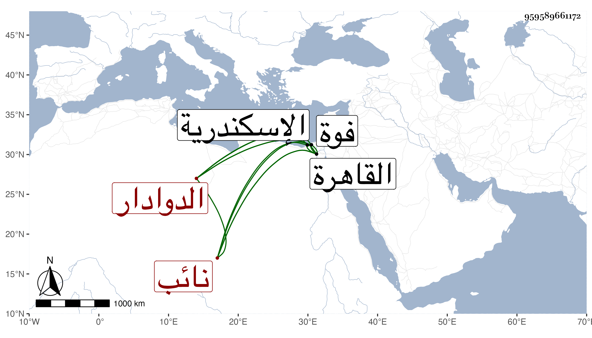

0902Sakhawi.DawLamic.ITO20230111-ara1.EIS1600.959589661172
Biography ID: 959589661172
782
أحمد الدوادار نائب الاسكندرية ويعرف بالأقطع ، مات في يوم الأحد تاسع عشر جمادى الثانية سنة أربع وثلاثين بالقاهرة ووصفه العيني بالأسود وأشار إلى أن والده كان طرقيا يفرش البسطات بالرميلة وغيرها بحيث أن ولده لما خدم الأتراك صار يستنكف منه بل ربما أنكره وقد باشر الدوادارية الصغرى للأشرف وكذا الذردكاشية ثم النيابة وأقام مقدار شهرين وكان لما ابتدأ ضعفه استأذن في التحول إلى فوة ثم إلى القاهرة ولم يلبث بها سوى يومين أو ثلاثة ومات واستقر بعده في الينابة جانبك الناصري .
